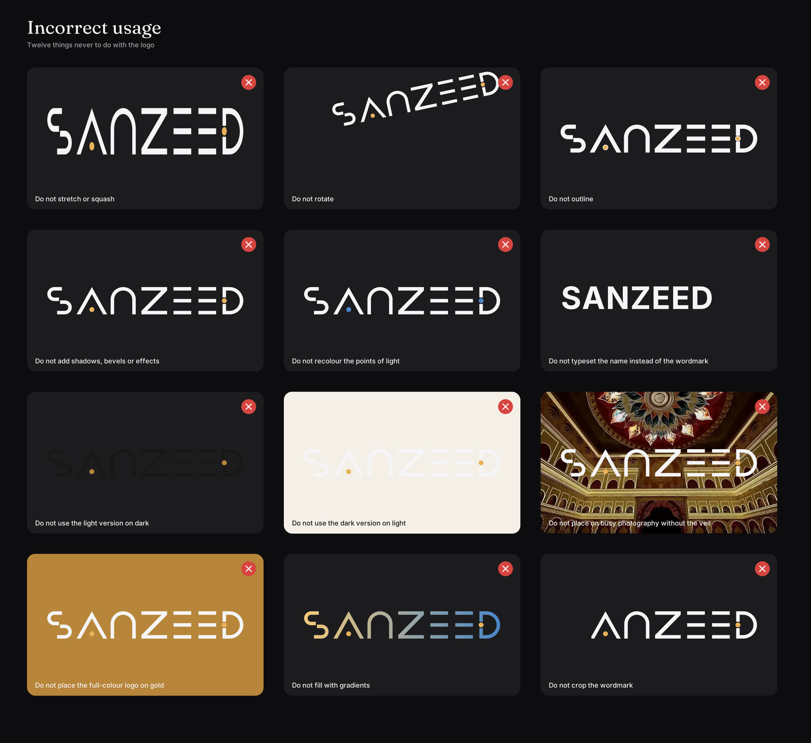

Chapter10
Incorrect usage.
Twelve things never done to the logo. If a layout needs any of them, the layout is wrong, not the logo.
- 10.1The twelve
Sanzeed Mirza · Experiential Design ConsultantBrand Guidelines · Version 1.0 · November 2026
10.1 · The twelve
Twelve ways to break it.
The sheet from 02_LOGO_SYSTEM/Guidelines; each tile shows the error on the background where it is most tempting.
- Do not stretch or squash. Scale uniformly only.
- Do not rotate. Horizontal, always; the stacked lockup for vertical spaces.
- Do not outline. The letters are solid; the stroke is the drawing, not a border.
- Do not add shadows, bevels, glows or effects to the letters. Only the points may glow, and only in motion.
- Do not recolour the points of light. Gold, or the ink of a single-colour version.
- Do not typeset the name instead of the wordmark, in any typeface.
- Do not use the light version on dark, or
- the dark version on light.
- Do not place on busy photography without the veil.
- Do not place the full-colour logo on gold.
- Do not fill with gradients, textures or imagery.
- Do not crop the wordmark or the S.
Also never: change the letter spacing, pair with the old raster signature, set the descriptor in another font or case, animate the letters by stroke-drawing or particles, or redraw any letter by hand.
